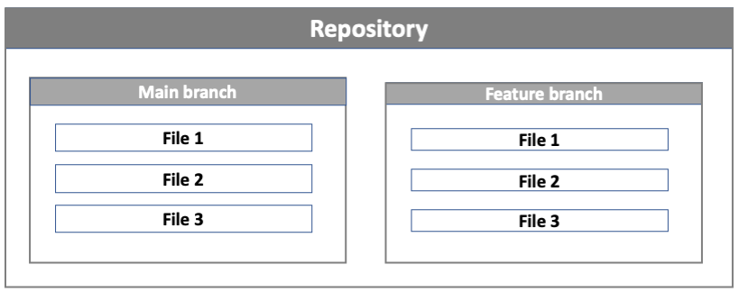
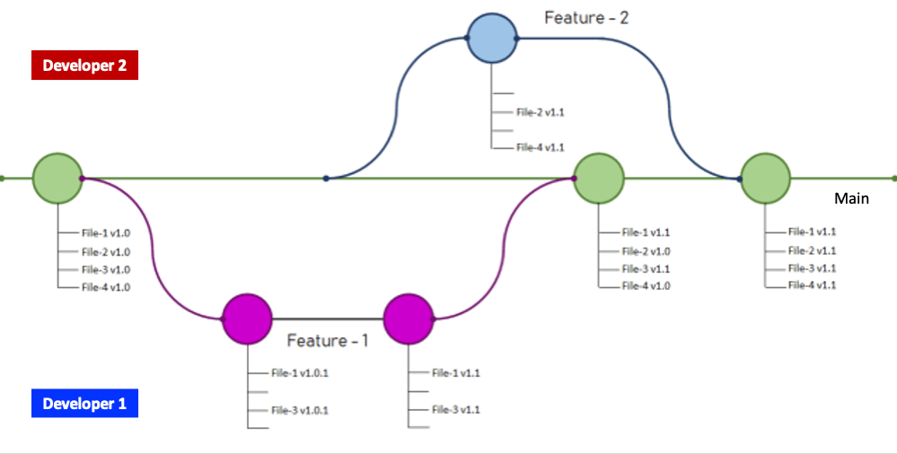
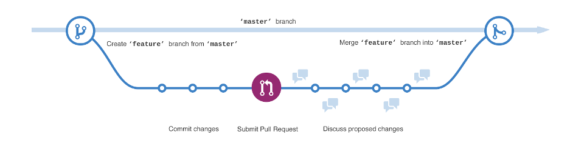

2 GitHub
2.1 What is GitHub?
GitHub is a cloud-based platform driven by the open-source community that hosts a vast amount of repositories and files. It uses the Git open-source version control system; the tool needed to keep track of your files’/repositories’ history. GitHub essentially makes it easier to use the Git version control system as it provides a user friendly interface to make the required operations to host and version your source code. Without GitHub, using Git normally requires knowledge in command line which can be challenging for users that do not have a technical background. Once your files are on GitHub, you would be able to share the link to your repositories with your colleagues and allow collaborative development of your source code.
So let’s get started using GitHub!
2.1.1 Creating a repository on GitHub
Let’s get started by creating a repository in our own GitHub organisation.
2.1.2 Issues - keeping track of tasks
In the previous example we have learnt how to create a repository and a file. One feature that is very useful in GitHub to help in the project management of your code are issues. Issues are created to suggest an idea, improvements or keep track of bugs, in other words, it can be viewed as a task list for the project. Issues are very useful especially when working collaboratively. They are very simple to use and are often ways to have a discussion between collaborators on a particular issue.
2.1.3 Creating a branch
So far we have been working directly on the main branch of our repository as by default a repository has one branch named main. A branch is a separate version of the main repository. The main branch is considered as the stable version of the code that you are working on. If you want to add a new feature or additions to your code, having a separate branch to work on is considered good practice as it will retain a stable version of your code in the main branch, while developing the new feature in a separate branch. The edits done in the feature branches will not show up in the main branch until they are merged into the main branch.

main and feature branch. When creating a new branch off the main branch, the new feature branch will be a copy of the main branch at that point in time.Figure 2.4 shows an example of how feature branches are used in development. In the example below, the main repository contains 4 files. Developer 1 creates a feature branch feature-1 from the main branch. They make changes to file 1 and file 3 and merge these changes to the main branch. While developer 1 was working in the feature-1 branch, developer 2 also created a feature branch feature-2 from the main branch. They worked on files 2 and 4 and merged their changes back into the main branch. At the end of the process, the main branch contains all the changes from the feature-1 and feature-2 branch. The feature branches created by the two separate developers show how feature branches facilitate development from multiple developers concurrently.

main. Image is an adaptation of the image from Prabhu Vingnesh Kimar Rajagopal.2.1.4 The GitHub flow
A better way of describing the process above is via the GitHub workflow. There are several different workflows, e.g., git-flow, GitHub flow and GitLab flow. It is not the scope of this course to get into details about the different software development versioning models. However, we will look briefly at GitHub flow which is one of the simple workflows available, with the aim to understand the basic constructs of software development versioning models so that we can adopt good practices when sharing code or working in teams. The main rule of the GitHub flow is that anything in the main branch is deployable. The main branch is the central branch which reflects what is deployed. Therefore the main branch should always be in a ready state and stable.
The GitHub flow steps consist of the following:
Create a branch: If you want to make changes to the files present in the
mainbranch, you will need to create a new branch off of themainbranch; we will refer to this as afeaturebranch. Name thisfeaturebranch with a descriptive name that reflects the change that you would like to do e.g.fix-issue1,add-chapter1. By creating a newfeaturebranch off themainbranch, you can safely do any changes you want without worrying of breaking themainbranch. When you create a branch from yourmainbranch, you’re creating a copy of themainrepository where you can add your new features or try out new ideas without effecting themainrepository.Make changes to the files and then commit to the
featurebranch. Adding commits to thefeaturebranch is important as it keeps track of the updates that you do to your files and also the reason why they were made (make sure you write clear commit messages). The creation of afeaturebranch allows us to keep track of any changes that are done and compare the difference between themainand thefeaturebranch. In this way you can have multiple people working on different things at the same time as you have a stablemainbranch and all the other existent branches are fixes or updates that are work-in-progress to the project. Committing changes to thefeaturebranch is also important as it helps you back up your work in case of a system failure or loss.Open a pull request: Once you have tested the changes you have applied on your code to make sure that everything is running well and you are happy with the changes/commits done on the
featurebranch, the next step is to propose these changes to be submitted into themainbranch for someone to review your work. This is done by creating a pull request. You can use the@mentionsystem on GitHub to bring this to attention to specific people.Discussion and review: The whole idea is that when you create a new pull request, this will enable a process of discussion and feedback about the changes being proposed back and forth between the developers of the
mainbranch and yourself (the person that created the pull request). If you need to make additional changes to yourfeaturebranch after discussion, you can commit the changes to thefeaturebranch again and then push the change. Pull requests can be written in Markdown so you can easily add images and other markdown formatting.Merge: Now that the code and files you have committed have passed all your testing, you can merge the changes to the existing
mainrepository so that now they form part of themainrepository. The good thing about all this process is that all the changes made during this process are preserved and anyone can track changes made in each merge and why they were made.

master in the image is now referred to as main. Image by GitHub.